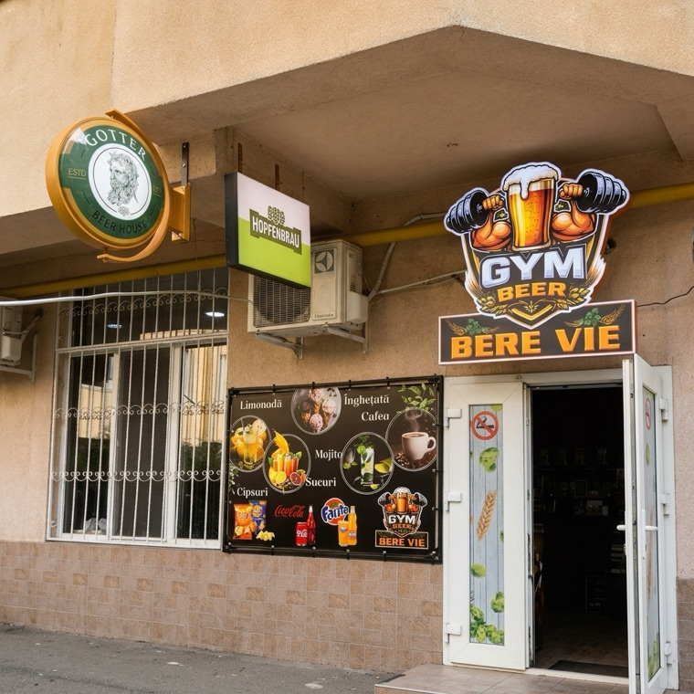

Două magazine, aceeași bere bună.
GYM BEER · BOTANICA
Botanica
- Adresa
- bd. Cuza-Vodă 1/4, Chișinău · sectorul Botanica
- Program
- zilnic, 10:00–22:00 (program publicat)
- Telefon
- +373 69 482 293
Cum ajungi cu transportul public
Cea mai apropiată stație: Colegiul de Transport (~200 m)
Troleibuz2028
Autobuz19
Rutieră103119120163174

GYM BEER · BUIUCANI
Buiucani
- Adresa
- str. Alba Iulia 23/2, Chișinău · sectorul Buiucani
- Program
- de confirmat — sună înainte de vizită
- Telefon
- +373 69 482 293
Cum ajungi cu transportul public
Cea mai apropiată stație: str. Onisifor Ghibu (~50 m)
Troleibuz32122
Autobuz326
Rutieră122172
Sursa informațiilor despre transport: OpenStreetMap (stații și trasee în jurul fiecărei adrese, pe o rază de ~400 m), consultat pe 18 noiembrie 2026. Traseele se mai schimbă — verifică ruta exactă în Transit sau la RTEC înainte de drum. Coordonatele adreselor: OpenStreetMap / Nominatim; hărțile: Google Maps.